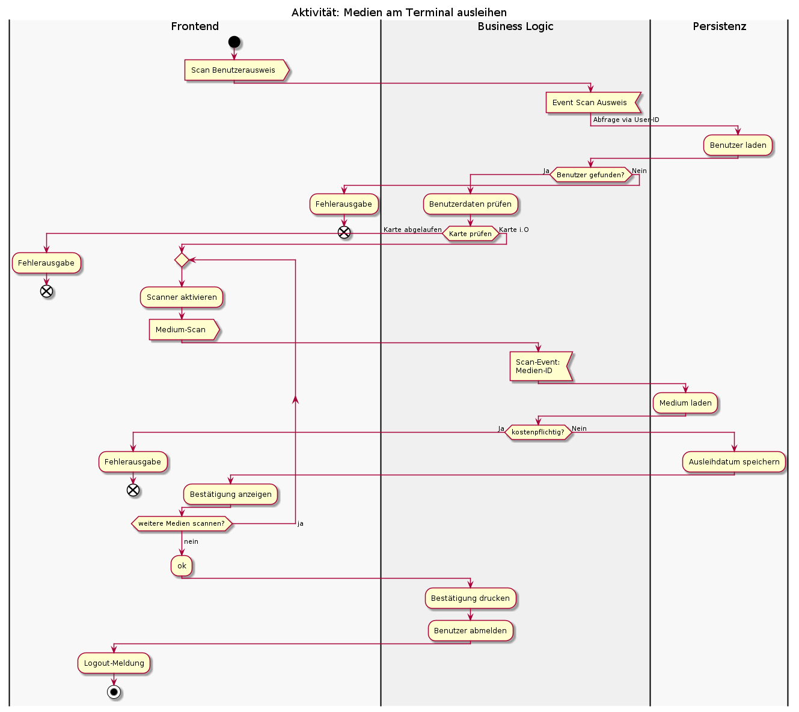
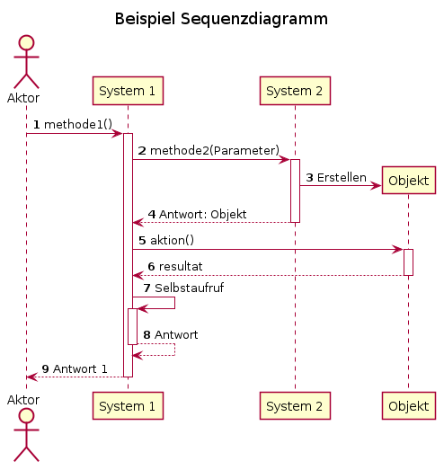
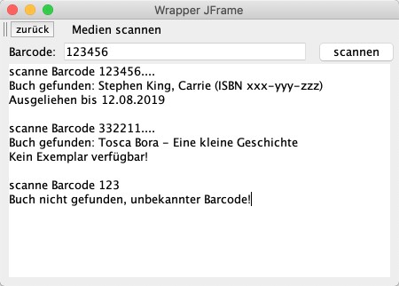

{% extends "../_base_template.html" %}
{% block title %}Lektion 8 - Sequenzen planen mit Sequenzdiagrammen{% endblock %}

{% block sections %}
<section data-markdown>
<textarea data-template>
<i class="fas fa-flask"></i> Besprechung Hausaufgabe Aktivitätsdiagramm
=============================

Beispiellösung Aktivitätsdiagramm Medium am Terminal ausleihen

<div style="display:flex; align-items: flex-start">

    <div style="flex-grow:1;margin: 10px 0 0 30px">
    <p>Kontrollieren Sie:</p>
    <ul>
        <li>Aktionsnamen: mit Verb?</li>
        <li>Black Holes / Miracles: keine Aktionen ohne Ein-/Ausgänge?</li>
        <li>Eindeutige Bedingungen definiert?</li>
        <li>alle Bedingungen definiert?</li>
    </ul>
    </div>
</div>


</textarea>
</section>

<section data-markdown>
<textarea data-template>
<i class="fas fa-user"></i> Kurzvorträge Design Pattern
=============================

Wir beschäftigen uns nach den Herbstferien mit Design Pattern - Dazu werden Sie einen Kurzvortrag zu einem Design Pattern vorbereiten.

Wir losen bereits jetzt die Design Pattern und Ihr Vortragsdatum (19.11.2020) aus:

* Adapter Pattern
* Singleton Pattern
* Strategy Pattern
* Observer / Observable Pattern

<!--
* Factory Method
* Decorator Pattern
* Iterator Pattern
-->

</textarea>
</section>

<section data-markdown>
<textarea data-template>
<i class="fas fa-graduation-cap"></i> OOD - Abläufe und Sequenzen
=============================

Heutiges Ziel: Gedrängtes Programm:
-------------

* Sie wissen, was ein "Szenario" ist
* Sie können Szenarien mit Sequenzdiagrammen abbilden
* Sie können eigene Szenarien für Ihr Software-Design entwickeln
* Sie implementieren die Maske "Medium mit Barcode / am Terminal ausleihen"

### Hausaufgaben über die Ferien:

* UML Sequenzdiagramm erstellen: Medien am Terminal ausleihen
* Implementation der Aktivität "Medium am Terminal ausleihen" im Prototypen umsetzen
</textarea>
</section>

<section data-markdown data-separator-notes="^Note:">
<textarea data-template>
<i class="fas fa-graduation-cap"></i> BibSys-Prototyp - erste Schritte
===========

Sie haben nun bereits ersten Kontakt mit dem Java-Programm BibSys-Prototyp. Wir wollen folgende Abläufe kurz zusammen anschauen:

Die folgenden Abläufe werden von jemandem von Ihnen am Code erläutert:

* Programmstart - Was passiert, bis die erste Maske angezeigt wird?
* Wie funktioniert das Login / die User-Authentifizierung?
* Wie funktioniert die Persistierung der Objekte im Programm (Benutzer, Medien ...)?

<i class="far fa-hand-point-right"></i> **Ziel ist, dass jeder verstanden hat, wie der bestehende Code funktioniert**. Zu konkreten Umsetzungsdetails / Pattern etc. werden wir im Verlauf der nächsten Lektionen kommen.

</textarea>
</section>

<section>
<section data-markdown data-separator-notes="^Note:">
<textarea data-template>
<i class="fas fa-graduation-cap"></i> Was ist ein "Szenario"?
===========

* Ein Szenario "verfeinert" einen Ablauf, einen Use-Case.
* Sie finden sowohl in der **Analyse** wie auch in der **Design-Phase** eine Anwendung.
* Szenarien decken **eine Variation** durch einen Use-Case / durch einen Ablauf ab (z.B. erfolgreiche Anmeldung). Weitere Variationen bilden ein **neues Szenario**
* Sie helfen, **Operationen** / **Methoden** zu finden.
* Sie können als **Test-Szenario** verwendet werden.

</textarea>
</section>

<section data-markdown data-separator-notes="^Note:">
<textarea data-template>
<i class="fas fa-graduation-cap"></i> Szenarien mit Sequenzdiagrammen abbilden
===========

* Sequenzdiagramme zeigen die **zeitliche Interaktion** zwischen einzelnen „Teilen“: Klassen/Objekte, Teilsysteme, Akteure, Abteilungen ...
* Zum Sequenzdiagramm gehört eine kurze Beschreibung in der Form (Direkt im/auf dem Diagramm)
  * Name des Szenarios
  * Bedingungen, die zu dieser Variation führen
  * Ergebnis des Szenarios

<div style="display:flex">



```
@startuml
title Beispiel Sequenzdiagramm
' Numerierung:
autonumber
skinparam shadowing false

' Aktoren und Objekte/Systeme definieren:
actor "Aktor" as actor
participant "System 1" as sys1
participant "System 2" as sys2

' Aufruf mit Beschriftung
' das ++ steht für das Starten einer Lifeline
actor -> sys1 ++ : methode1()
    sys1 -> sys2 ++: methode2(Parameter)

    ' Teilnehmer instanzieren:
    sys2 -> Objekt ** : Erstellen
    return Antwort: Objekt

    sys1 -> Objekt ++ : aktion()
    return resultat

    sys1 -> sys1 ++ : Selbstaufruf
    return Antwort Selbstaufruf
' Antwort auf Aufruf: jeder Aufruf benötigt eine Antwort
return Antwort 1
@enduml
```
</div>

</textarea>
</section>
</section>

<section data-markdown data-separator-notes="^Note:">
<textarea data-template>
<i class="fas fa-wrench"></i> Sequenzdiagramme entwickeln: PlantUML
===========

Kurze Einführung in Sequenzdiagramme mit PlantUML: Wir schauen uns die wichtigsten Syntax-Elemente für PlantUML an:

* Erstellen eines Sequenzdiagrammes
* Life-Lines mit Klassen/Objekten
* Messags / Replies
* Selbstaufrufe
* Objekt-Instanzierung

</textarea>
</section>

<section data-markdown data-separator-notes="^Note:">
<textarea data-template>
<i class="fas fa-wrench"></i> Design: Szenario entwerfen
===========

Sequenzdiagramme werden in der Design-Phase verwendet, um die zeitlichen Abläufe von Meldungen (Methodenaufrufen) zwischen Objekten / Klassen darzustellen.

**Aufgabe:**

**Entwerfen Sie ein Sequenzdiagramm** für das **Standard-Szenario** des Use-Cases "Medium am Terminal / Barcode ausleihen":

* Barcode wird erkannt
* Buch ist vorhanden und ausleihbar
* Buch ist kostenlos
* Buch kann erfolgreich ausgeliehen werden

Zeichnen Sie den gesamten Ablauf dieses Szenarios als technisches Sequenzdiagramm auf:

* Welche Klassen / Objekte sind involviert? Diese stellen die Kommunikationspartner dar. Überlegen Sie sich eine mögliche Implementation!
* Welche Methoden werden in welcher Reihenfolge ausgeführt?
* Nehmen Sie dazu die **Anforderung des Bibliothekssystems** und die Use Cases zur Hilfe: Diese definieren die geforderte Funktionalität.
* Nehmen Sie die [ **"Checkliste 007 Sequenzdiagramm"** ]( https://moodle.bztf.ch/pluginfile.php/43852/mod_folder/content/0/Checkliste_007_Szenario.pdf?forcedownload=1) zur Hilfe: Sie zeigt Ihnen, auf welche Kriterien Sie achten müssen.

**Implementieren Sie den Programmteil "Medium am Terminal / Barcode ausleihen"**: Kümmern Sie sich dabei noch nicht um Design Pattern: Versuchen Sie einfach, den Programmteil nach Ihrem besten Wissen umzusetzen.
</textarea>
</section>

<section data-markdown data-separator-notes="^Note:">
<textarea data-template>
<i class="fas fa-wrench"></i> Design: Szenario entwerfen
===========

**Hausaufgabe über Herbstferien**

* Stellen Sie das Sequenzdiagramm fertig. Einreichen via Classroom-Repo.
* Versuchen sie, eine **mögliche Implementation** im BibSys-Prototypen umzusetzen! **Abgabe ebenfalls als commit(s) im Repo!**
  * Ziel der Umsetzung:
    1. Navigation aus Hauptmenu -> Scan-Maske und zurück
    2. UI in etwa wie unten gezeigt aufbauen
    3. Scan "simulieren" durch Eingabe der Barcode-Nummer in Textfeld
    4. Medien werden als ausgeliehen markiert


</textarea>
</section>

{% endblock %}
